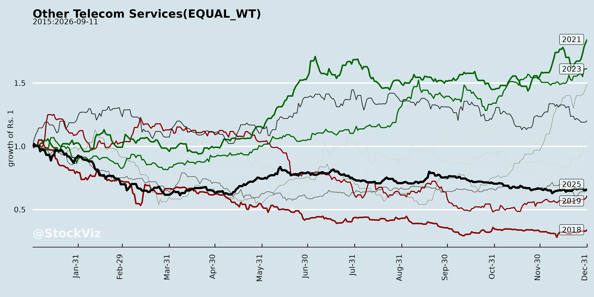
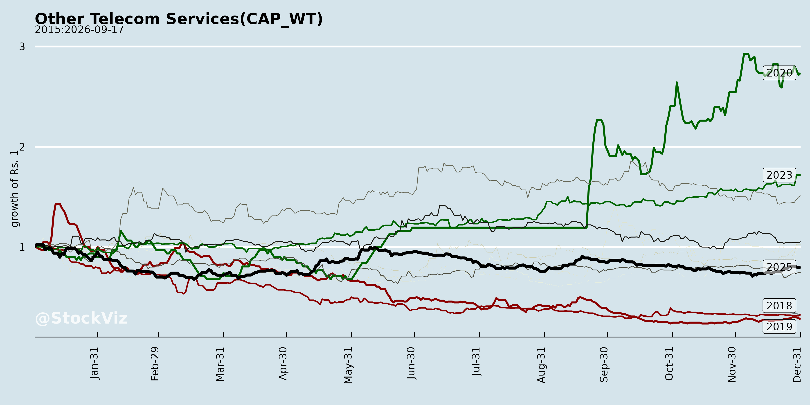
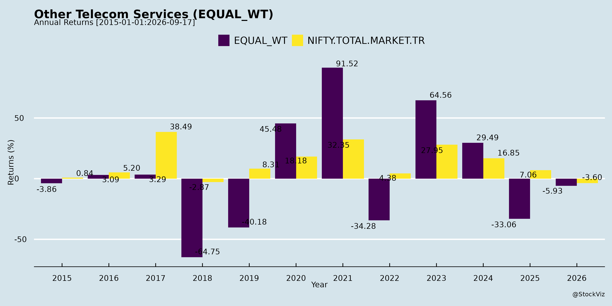
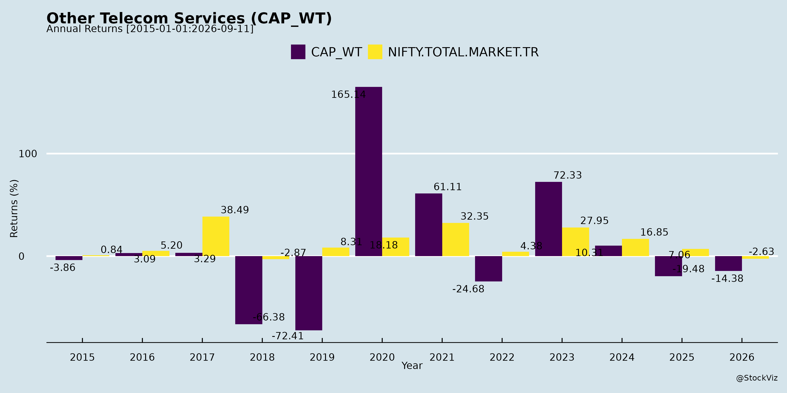
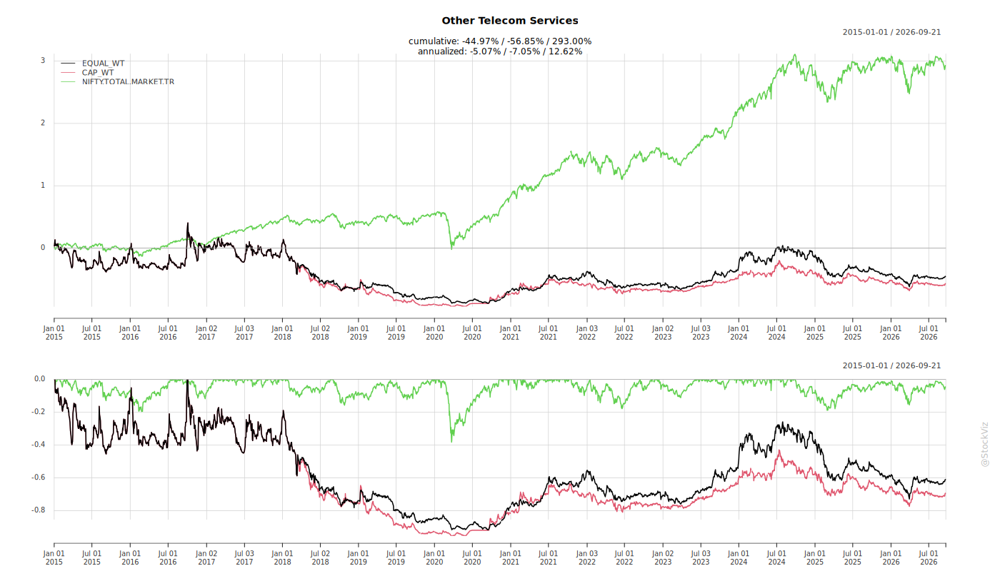
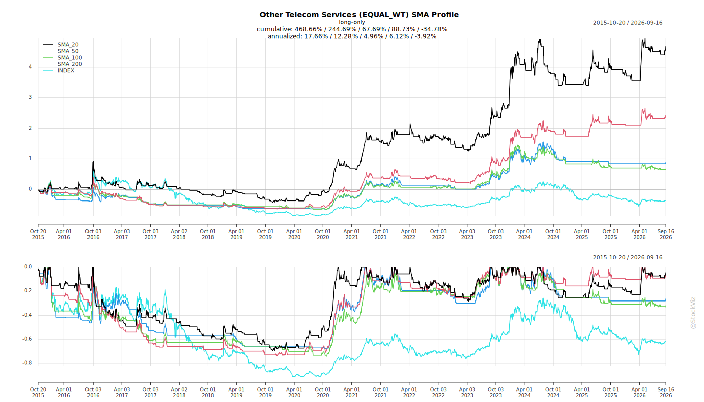
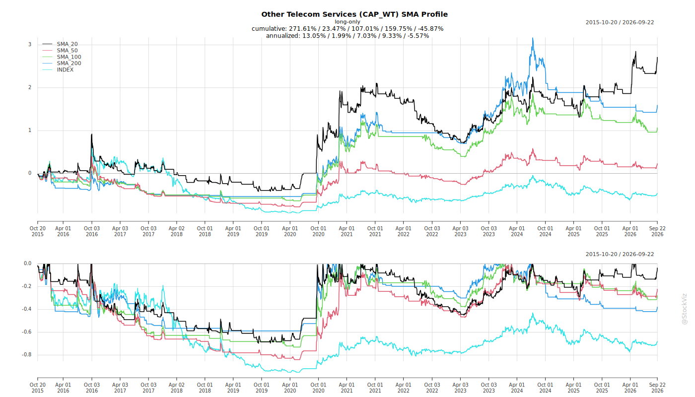
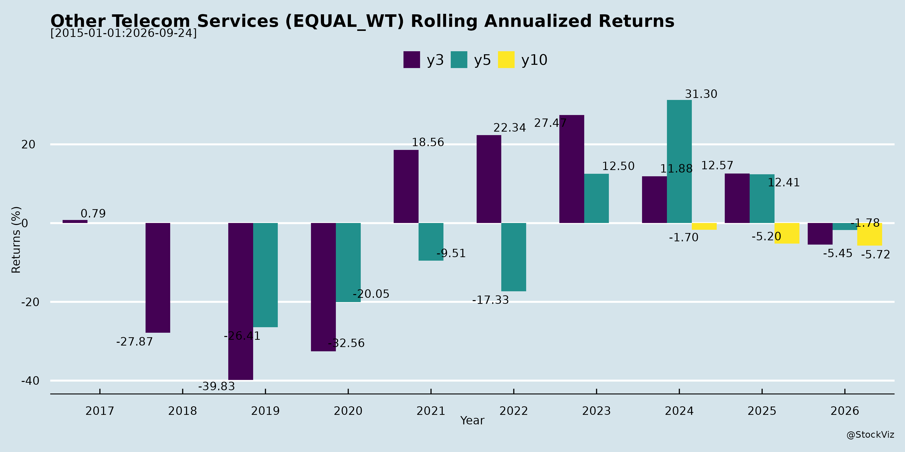
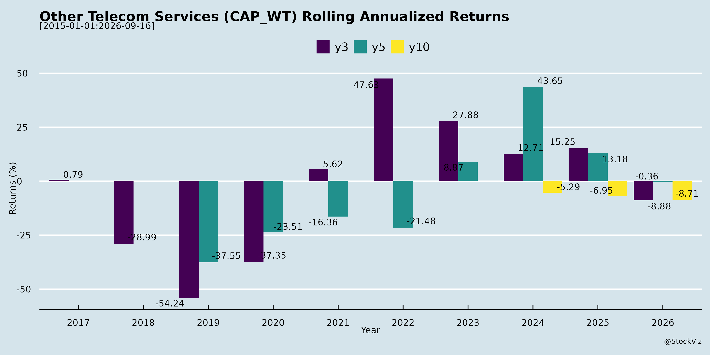

asof: 2025-11-27
Summary Analysis: Indian Other Telecom Services Sector
(Based on Q2/H1 FY26 Earnings Transcripts of RailTel Corporation of India Ltd. (infrastructure/projects-focused CPSE) and Route Mobile Ltd. (CPaaS provider), representing key players in non-core telco services like telecom infra, projects, data centers, SMS/CPaaS, and emerging digital comms.)
Tailwinds
Headwinds
Growth Prospects
Key Risks
Overall Sector Outlook: Strong tailwinds from govt digital push/partnerships offset headwinds in legacy SMS/projects. Profitable growth (11-12% margins) sustainable with 20%+ topline via execution/new products; monitor project margins/receivables. Positive momentum into FY27, but execution key.
asof: 2025-11-27
Summary Analysis: Indian Other Telecom Services Sector
(Based on Q3 & 9M FY25 financial results of representative companies: GTL Ltd., Megasoft Ltd., RailTel Corp., Route Mobile Ltd., Uniinfo Telecom Services Ltd. Sector includes niche players in network services, telecom infra, CPaaS/messaging, installation, and related services. Performance is mixed: RailTel & Route Mobile show strength; GTL & Uniinfo face distress; Megasoft has pivoted/non-operational.)
Headwinds (Challenges Pressuring Performance)
Tailwinds (Supportive Factors)
Growth Prospects (Medium-Term Outlook)
Key Risks
| Risk Category | Details | Impacted Firms | Mitigation |
|---|---|---|---|
| Financial Distress | High debt/defaults (GTL: ₹3,854 Cr); losses erode equity (Uniinfo 9M loss ₹89 L). | GTL, Uniinfo | OTS, arbitration (GTL). |
| Operational/Legal | NCLT/DRT proceedings; subsidiary write-offs (Uniinfo Thailand). Auditor emphasis on going concern (GTL). | GTL, Uniinfo | Legal negotiations ongoing. |
| Market/Competition | Telecom slowdown (Aircel/BSNL legacy hits GTL); no reportable segments in some (Megasoft). | All | Diversification (Route Overseas). |
| FX & Macro | Rupee volatility spikes losses; unconfirmed balances ₹33,122 Cr (GTL). | GTL, Route | Hedging/FX disclosures. |
| Regulatory | SEBI/NCLT scrutiny; min public shareholding (Route complied post-acquisition). | All | Compliance filings noted. |
Overall Verdict: Sector polarized—strong players (RailTel, Route: 20-80% YoY growth) thrive on infra/digital tailwinds; distressed ones (GTL, Uniinfo) face existential risks from debt/FX. Growth hinges on 5G execution; monitor debt resolutions for upside. Selective investment in leaders advised.
asof: 2025-11-27
Analysis of Indian Other Telecom Services Sector
Based on the provided disclosures from key players (GTL Ltd., Megasoft Ltd., RailTel Corp., Route Mobile Ltd., STL Networks Ltd., Uniinfo Telecom Services Ltd.), the sector shows resilience amid routine compliance, legal resolutions, inorganic growth, and capital access. This reflects a stable but capex-intensive environment driven by infra expansion, digital services, and international forays. Below is a structured summary:
Tailwinds (Positive Drivers)
Headwinds (Challenges)
Growth Prospects
Key Risks
| Risk Category | Details | Mitigation from Docs |
|---|---|---|
| Financial/Leverage | Debt raise (STL: ₹300 Cr); past distress (GTL). | No penalties; NIL implications noted. |
| Regulatory/Judicial | NCLT/insolvency echoes (GTL); SEBI compliance intensity. | Resolutions/withdrawals; proactive disclosures. |
| Execution/Integration | Cross-border M&A (Megasoft); capex absorption. | Quick closings; committee approvals. |
| Market/Competition | High capex in competitive telecom infra; forex for UK ops. | Niche focus (rail, networks); governance hires. |
| Governance | Auditor changes/AGM logistics. | Long-term appointments; digital outreach. |
Overall Summary: Bullish tilt with strong tailwinds from resolutions and expansions outweighing mild headwinds. Growth prospects robust via M&A/debt, but monitor debt servicing amid rate hikes. Sector rating: Positive (Buy/Hold) for investors eyeing infra/digital tailwinds; risks low-moderate per disclosures. No major red flags; filings emphasize compliance over distress.
asof: 2025-11-27
Summary Analysis: Indian Other Telecom Services Sector
Context: The analysis is based on Q2 FY26 earnings transcripts of RailTel Corporation (telecom infrastructure/projects, Navratna CPSE) and Route Mobile (CPaaS/omnichannel platform). This sector encompasses telecom services beyond core mobile ops (e.g., NLD/ISP/IP, projects, data centers, CPaaS, APIs). RailTel shows robust order-book driven growth (H1 revenue +20% YoY), while Route Mobile reflects profitable recovery (QoQ revenue +6.5%, new products +13%). Overall, sector benefits from digitalization but faces pricing/mix pressures.
Headwinds
Tailwinds
Growth Prospects
| Metric | RailTel FY26 Guidance | Route Mobile Outlook |
|---|---|---|
| Revenue Growth | 25% YoY | Double-digit medium-term; H2 strong |
| EBITDA Margin | 11-12% | 11.9% (sustainable+) |
| Key Driver | Order execution (Rs.2,000cr/yr) | New products (+13% QoQ) |
Key Risks
Overall Outlook: Positive with resilience. Tailwinds from digital infra/digital comms outweigh headwinds; growth prospects strong (20%+ sector CAGR feasible) via diversification. Monitor margins (11-12% anchor) and execution. Risks mitigated by order visibility (RailTel) and platform evolution (Route). Sector poised for re-rating on govt capex/digital shift.
asof: 2025-11-27
Summary Analysis: Indian Other Telecom Services Sector
(Based on Route Mobile Limited’s Q2FY26 results and Invenia-STL Networks Ltd.’s INR 359 Cr contract win, representing CPaaS/messaging and digital infrastructure/data center segments of “Other Telecom Services” in India.)
Headwinds
Tailwinds
Growth Prospects
Key Risks
Overall Outlook: Mixed quarter with operational tailwinds (revenue/EBITDA gains, marquee contracts) offsetting profitability headwinds. Sector growth intact at 12-15% near-term, driven by India’s digital infra push, but risks from competition/carriers warrant monitoring. Positive for diversified players like Route Mobile and Invenia amid long-term 5G/cloud tailwinds.
Copyright © 2023 SAS Data Analytics Pvt. Ltd. All rights reserved.